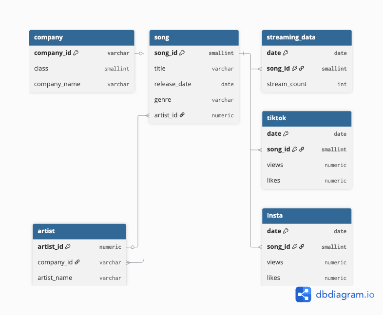
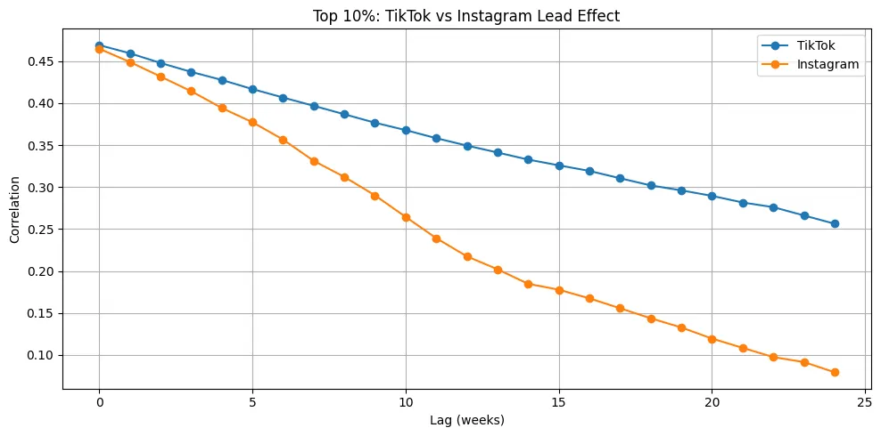
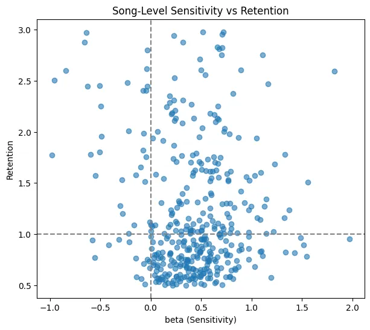

2. 데이터 및 EDA
| 항목 | 내용 |
|---|
| 대상 곡 수 | 1,158곡 (K-pop 및 인디) |
| 기간 | 최대 약 700일 시계열 |
| 플랫폼 | TikTok / Instagram / Spotify |
| 메타데이터 | 장르, 소속사 규모, 발매연도, MV 존재 등 |
| 분석 단위 | 곡별 일일 스트리밍 증감률 (로그 차분) |

그림 0. 주요 데이터 (간략)
플랫폼 구조의 이질성
- TikTok: 급성장형, 강한 초반 충격과 잔존 효과
- Instagram: 완만한 노출·성장형, 중·장기 유지력은 상대적으로 낮음

그림 1. 상위 10% 곡군에서 TikTok(파랑)이 Instagram(주황)보다 더 오래, 더 강하게 스트리밍과 동행(correlation)하는 리드 효과
3. 이질적 성장 패턴 분류 (K-Means)
목적: 곡마다 상이한 성장 곡선을 군집화하여 TikTok 반응의 정성적 차원을 정의.
방법: K-Means (k=6), 피처는 peak shape·volatility·baseline 등 스트리밍 궤적 특성으로 구성.
| Cluster | 핵심 패턴 | 요약 |
|---|
| C0 | 무반응형 | 노출·스트리밍 모두 완만 |
| C1 | 안정형 | 발라드/OST 등 완곡 상승 |
| C4 | 급성장형 | 짧은 기간 급등 후 유지 |
| C5 | 고변동형 | 반복적 급등·급락 |
- TikTok 효과가 높은 곡들은 특정 패턴(C4·C5)에 집중
- 이는 효과가 평균적이 아니라 선택적(selective)임을 시사
4. TikTok 기여도(ATE) 추정 — KSARIMAX
모델 발전
| 모델 | 역할 | 한계 / RMSE |
|---|
| ARIMAX | TikTok → Streaming 기본 구조 | 계절성·구조변화 반영 한계 / 0.00479 |
| SARIMAX | 7일 주기 계절성 반영 | 곡 간 이질성 미포착 / 0.00028 |
| KSARIMAX | 군집 + 구조변화 반영 | 0.00018 (최종) |
Counterfactual: Viral onset 이전 구간으로 KSARIMAX를 학습하고, TikTok=0으로 두었을 때의 가상 스트리밍 경로 ŶCF를 생성. 실제 Y와의 차이를 ATE로 정의.
결과 요약
- C4·C5에서는 ATE가 크게 양(+)의 값으로, TikTok 부재 시 대비 큰 추가 성과
- C0·C1은 ATE ≈ 0으로, TikTok 노출이 있어도 실질적 효과 미미
5. TikTok 바이럴 유형학 (The Viral Map)
ATE가 높다고 해서 모두 “좋은 바이럴”은 아니다. TikTok 이후 반응성(Reactivity)과 지속성(Retention)이 얼마나 유지되는지가 중요
각 곡에 대해 TikTok 민감도(β)와 이후 스트리밍 유지력 지표를 산출하여 2차원 평면에 매핑

그림 2. 곡별 민감도(β)–지속성(Retention) 산점도. 1사분면이 이상적 바이럴(높은 반응 + 높은 유지력)에 해당.
| 구역 | 유형 | 특징 |
|---|
| Ⅰ사분면 | 이상적 바이럴 (Star) | Reactivity ↑, Retention ↑ |
| Ⅱ사분면 | 팬덤형 (Niche) | 충성 팬덤 중심, 완만하지만 지속 |
| Ⅲ사분면 | 무반응 (Zombie) | TikTok 노출 대비 반응 거의 없음 |
| Ⅳ사분면 | 반짝 히트 (Flash) | 반응은 크지만 금방 소멸 |
6. 1사분면(이상적 바이럴) 사전 예측 — XGBoost
목적: “어떤 곡이 1사분면(이상적 바이럴)에 들어갈까?”를 발매 전에 예측.
- 타깃: 1 = 1사분면, 0 = 나머지
- 입력 피처: 소속사 규모(class), 장르, 발매연도, MV 존재 등 사전 메타데이터
| 지표 | 값 |
|---|
| AUC | 0.83 |
| 정확도 | 0.76 |
| 상위 중요 변수 | class_2, class_3, existence, release_year 등 |
- 곡의 메타정보만으로도 이상적 바이럴 가능성 사전 판별 가능
- 마케팅 초기에 타깃 후보곡 선별 가능
| 가수 |
곡 |
이상적 바이럴 가능성 |
| 블랙핑크 |
jump |
O |
| molly yam |
wet |
X |
| 임영웅 |
순간을 영원처럼 |
X |
| idntt |
boytude |
X |
| idntt |
You Never Met |
O |
7. 결론 및 통합 프레임워크
최종 결론
- TikTok 효과는 평균적이 아니라 이질적·선택적이다. 특정 패턴(C4·C5)과 특정 유형(1사분면)에서만 강한 반응 집중
- KSARIMAX 기반 Counterfactual 추정을 통해 TikTok의 인과적 기여도를 곡 수준에서 정량화함
- Reactivity × Retention Viral Map과 XGBoost 예측을 결합하여, “어떤 곡에 언제 TikTok을 써야 하는가”에 대한 실무적 프레임워크 제시
통합 프레임워크
① 시계열 기반 TikTok ATE 추정
② Viral Map으로 유형 분류
③ XGBoost로 이상적 바이럴 후보 선별
④ 캠페인 설계 및 예산 배분 의사결정에 활용.